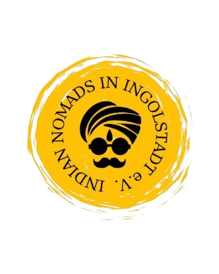
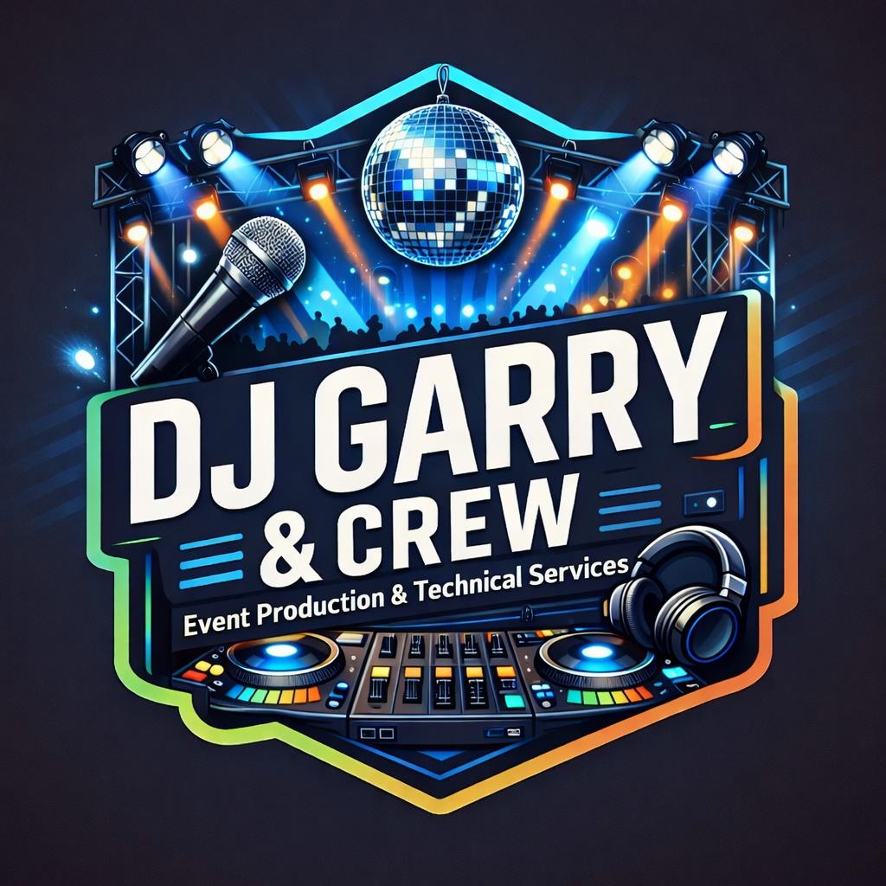
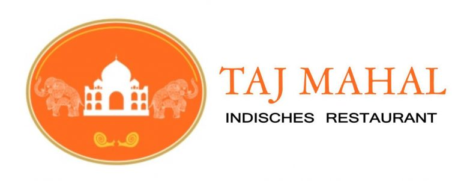
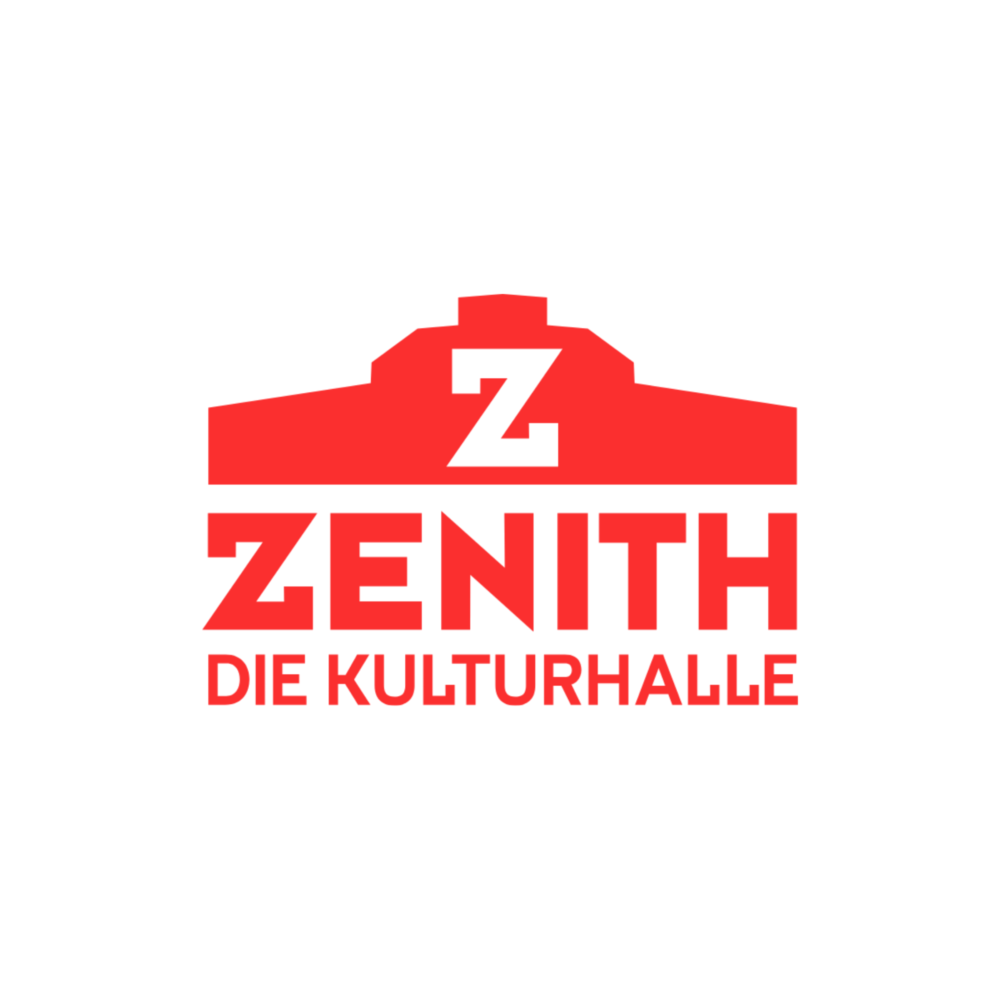
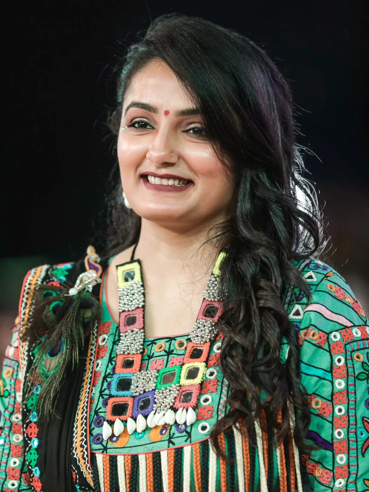
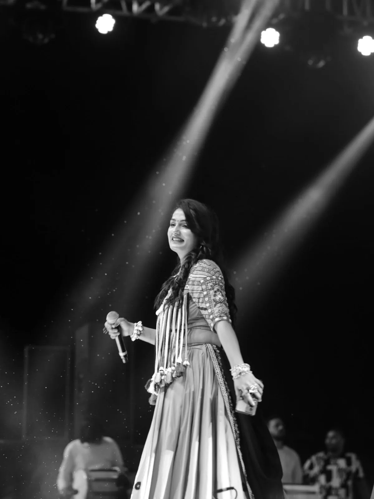
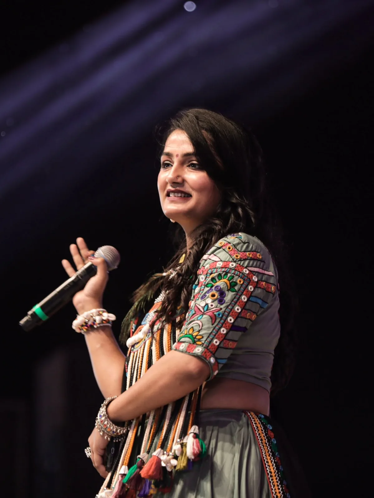
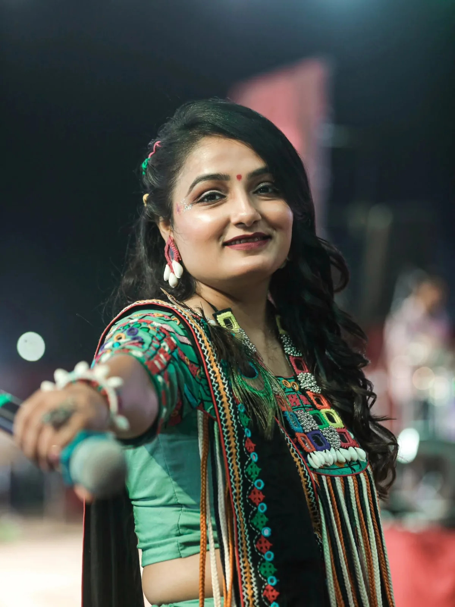

Fusion4 Events × Indian Nomads in Ingolstadt e.V. × SK Edits
Garba Mahotsav Munich 2026 with Apexa Pandya & Live Band
Munich's Biggest Indian Cultural Celebration!
One Ticket. Three Experiences. One Unforgettable Night! 💃🪔🎶
Experience the vibrant spirit of India with Live Garba Raas, Bhajan Sandhya & DJ Dandiya Night — all under one roof.
Date: Sunday, 25 October 2026
Time: 12:30 PM – 10:00 PM
Venue: Zenith – Die Kulturhalle, Lilienthalallee 29, 80939 München
Artist: Apexa Pandya live in concert, with live band & DJ
Tickets: Early bird from €15.99 — limited availability!
Organizers, sponsors & partners




Garba in Munich like never before
Garba Mahotsav Munich 2026 brings Europe's biggest Sharad Purnima Raas Garba to Zenith – Die Kulturhalle, one of Munich's most iconic event venues. On Sunday, 25 October 2026, more than 2,000 guests from across Germany and Europe will come together for a full day and evening of Garba, Raas and Dandiya — the beloved Gujarati festival dances performed in flowing circles to live music and dhol.
Whether you grew up dancing Garba every Navratri or you are experiencing an Indian festival night in Germany for the very first time, this celebration is open to everyone. One ticket brings you three experiences under one roof — Live Garba Raas, Bhajan Sandhya and DJ Dandiya Night — with a spectacular stage production, sattvik food stalls and a hall full of colour, music and community. Don't miss Munich's biggest celebration of Indian culture, music, devotion and togetherness — one night, one celebration, a million memories.
Apexa Pandya live in concert
Headlining the Mahotsav is Apexa Pandya, one of Gujarat's most loved Garba voices, performing live in Munich with her full band. From soulful bhajans during the Bhajan Sandhya to non-stop high-tempo Raas Garba sets, Apexa Pandya and her musicians will keep the floor moving from the afternoon deep into the night, joined by DJ music between the live sets.




Event highlights
One Ticket. Three Experiences.
- 🪔 Bhajan Sandhya — a devotional music session with Apexa Pandya and devotional guest artists, celebrating Sharad Purnima, the full-moon night
- 💃 Live Garba Raas & Traditional Dandiya — traditional circles, live dhol and the biggest Garba stage in Europe, with Apexa Pandya & live band
- 🎧 DJ Dandiya Night — Bombay-style beats with DJ Garry & Crew; bring your dandiya sticks or grab a pair at the venue
A Navaratri gift from Fusion4Events 🎁
And for everyone:
- 🌿 100% non-alcoholic event — a pure, festive celebration for all
- 🍛 Sattvik food — vegetarian festive food and drinks all day
- 👨👩👧 Kids & family-friendly — children welcome; a celebration of Indian culture, music, devotion and togetherness for all generations
Date, venue & getting there
Sunday, 25 October 2026, 12:30 PM – 10:00 PM
Zenith – Die Kulturhalle, Lilienthalallee 29, 80939 München, Germany
The Zenith Kulturhalle is located in Munich-Freimann, a short walk from the U6 Freimann underground station and easily reached from Munich city centre. Parking is available near the venue, though public transport is recommended on event day. Travelling from outside Munich? The venue is well connected to the A9 motorway for visitors driving from Ingolstadt, Nuremberg, Stuttgart or Frankfurt.
Tickets
🔥 Limited early bird tickets from €15.99! One ticket covers all three experiences — Live Garba Raas, Bhajan Sandhya and DJ Dandiya Night. Book online now:
Questions about group bookings, stalls or sponsoring? Contact the organizers directly:
- WhatsApp: +49 15560 200235
- Email: info@fusion4events.com
Frequently asked questions
- How do I book tickets for Garba Mahotsav Munich 2026?
- Book online via the Book Tickets button on this page, or directly with the organizer via WhatsApp at +49 15560 200235 or by email at info@fusion4events.com.
- When and where does the event take place?
- Sunday, 25 October 2026, 12:30 PM to 10:00 PM at Zenith – Die Kulturhalle, Lilienthalallee 29, 80939 München.
- How do I get to Zenith – Die Kulturhalle?
- The venue is in Munich-Freimann, a short walk from the U6 station Freimann. Parking is available near the venue; public transport is recommended on event day.
- Is food available at the event?
- Yes — sattvik (pure vegetarian) Indian food and drinks are available from food stalls throughout the day.
- Is alcohol served at the event?
- No — Garba Mahotsav Munich is a 100% non-alcoholic event, keeping the celebration festive, devotional and family-friendly.
- Is the event family-friendly? Can I bring children?
- Yes, children are welcome. Details on child tickets and family facilities are announced with the ticket categories.
- Is there a dress code?
- Traditional attire — Chaniya Choli, Kediyu — is loved but not mandatory. Wear anything festive you can dance in, and comfortable footwear.
- What should I bring?
- Your ticket and your energy. Dandiya sticks are typically available at the venue; you're welcome to bring your own.
Organizer & contact
Garba Mahotsav Munich 2026 is organized by Fusion4 Events in association with Indian Nomads in Ingolstadt e.V. and SK Edits. For tickets, sponsoring, stalls or press enquiries:
- Email: info@fusion4events.com
- WhatsApp: +49 15560 200235
- Instagram: @fusion4events · Facebook: Fusion4 Events · TikTok: @fusion4events